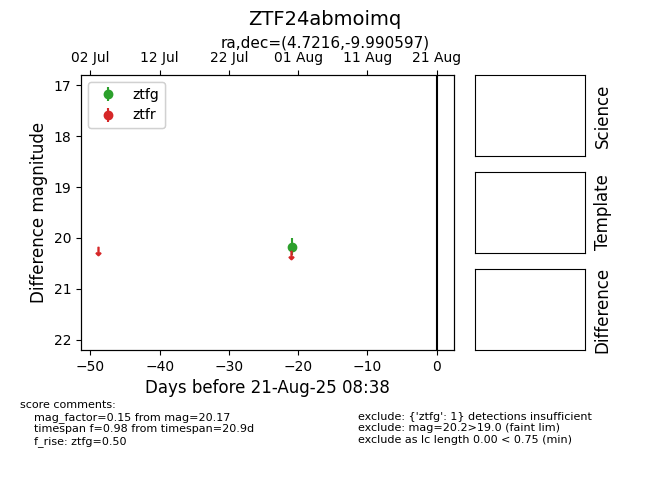

Target ZTF24abmoimq at 2025-08-21 08:38, see:
FINK: fink-portal.org/ZTF24abmoimq
Lasair: lasair-ztf.lsst.ac.uk/objects/ZTF24abmoimq
ALeRCE: alerce.online/object/ZTF24abmoimq
alt names
ZTF24abmoimq (ztf,alerce)
coordinates:
equatorial (ra, dec) = (4.7216,-9.99060)
galactic (l, b) = (97.2688,-71.22213)
photometry
last ztfg=20.17
1 ztfg detections
